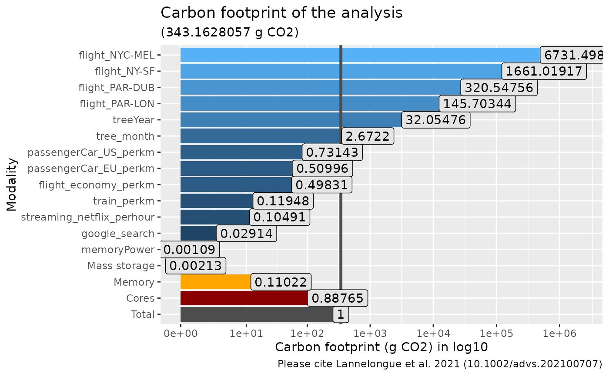

Compute footprint in grams of CO2 using Lannelongue et al. 2021 algorithm
Source:R/ga_footprint.R
ga_footprint.Rd
Please cite Lannelongue, L., Grealey, J., Inouye, M., Green Algorithms: Quantifying the Carbon Footprint of Computation. Adv. Sci. 2021, 2100707. https://doi.org/10.1002/advs.202100707
Default value are from https://github.com/GreenAlgorithms/green-algorithms-tool:
PUE: https://github.com/GreenAlgorithms/green-algorithms-tool/blob/master/data/v2.2/defaults_PUE.csv
TDP_per_core: https://raw.githubusercontent.com/GreenAlgorithms/green-algorithms-tool/refs/heads/master/data/v2.2/TDP_cpu.csv
power_draw_per_gb: https://onlinelibrary.wiley.com/doi/10.1002/advs.202100707
Description of the algorithm from the green-algorithms website:
"""
The carbon footprint is calculated by estimating the energy draw of the algorithm and the carbon intensity of producing this energy at a given location:
$$carbon footprint = energy needed * carbon intensity$$
Where the energy needed is:
$$runtime * (power draw for cores * usage + power draw for memory) * PUE * PSF$$
The power draw for the computing cores depends on the model and number of cores, while the memory power draw only depends on the size of memory available. The usage factor corrects for the real core usage (default is 1, i.e. full usage). The PUE (Power Usage Effectiveness) measures how much extra energy is needed to operate the data centre (cooling, lighting etc.).
The PSF (Pragmatic Scaling Factor) is used to take into account multiple identical runs (e.g. for testing or optimisation).
The Carbon Intensity depends on the location and the technologies used to produce electricity. But note that the "energy needed" [...] is independent of the location.
"""
Usage
ga_footprint(
runtime_h = NULL,
location_code = "WORLD",
PUE = 1.67,
TDP_per_core = 12,
n_cores = 1,
cpu_model = "Any",
memory_ram = NULL,
power_draw_per_gb = 0.3725,
PSF = 1,
usage_core = 1,
add_ref_values = TRUE,
add_storage_estimation = FALSE,
mass_storage = NULL,
carbon_intensity = NULL,
TDP_cpu = NULL,
ref_value = NULL
)Arguments
- runtime_h
Run time in hours (int). If runtime_h == "session", the runtime is compute using the actual R session
- location_code
(character list of country or region available in )
- PUE
(int) Power usage effectiveness of the server. See https://github.com/GreenAlgorithms/green-algorithms-tool/blob/master/data/v2.2/defaults_PUE.csv for example of values. If you are using your personal computer, set PUE to 1.
- TDP_per_core
(int. in Watt, default 12). Find your cpu TDP and your nb of cpu on https://www.techpowerup.com/cpu-specs/ or in http://calculator.green-algorithms.org/ if available. Owerwrite by cpu_model param.
- n_cores
(int, default 1) Number of cores. Owerwrite by cpu_model param.
- cpu_model
Must be present in the list of http://calculator.green-algorithms.org/. If CPU is set, the parameter TPD_per_core and n_cores are overwriting by info from the cpu_model. "auto" modality (find the cpu using
benchmarkme::get_cpu()$model_name) is not running for the moment.- memory_ram
(int. in GB) The memory RAM. If memory_ram is NULL, use benchmarkme::get_ram() to get the RAM.
- power_draw_per_gb
(int. in Watt, default 0.3725) The power draw for each GB of RAM
- PSF
(int, default 1) Pragmatic Scaling Factor. Citation from Lannelongue et al. 2021: "Many analyses are presented as a single run of a particular algorithm or software tool; however, computations are rarely performed only once. Algorithms are run multiple times, sometimes hundreds, systematically or manually, with different parameterizations. Statistical models may include any number of combinations of covariates, fitting procedures, etc. It is important to include these repeats in the carbon footprint. To take into account the number of times a computation is performed in practice, the PSF was defined, a scaling factor by which the estimated GHG emissions are multiplied."
- usage_core
(int, default 1). The usage factor corrects for the real core usage (default is 1, i.e. full usage).
- add_ref_values
(logical, default TRUE) Do we compute and return reference values to compare to your footprint ?
- add_storage_estimation
(logical, default FALSE) Do we compute the footprint of mass storage ? By default FALSE because it is far less important than cpu and memory usage. Note that green-algorithms website do not compute mass storage usage.
- mass_storage
(int. in GB, default NULL) The size of the mass_storage. Only used if add_storage_estimation is set to TRUE. If set to NULL, use the
base::gc()function to estimate storage used.- carbon_intensity
(default NULL). Advanced users only. A dataframe with
locationandcarbonIntensitycolumns. Set to carbon_intensity_internal if NULL. carbon_intensity_internal is set using command line csv_from_url_ga("https://raw.githubusercontent.com/GreenAlgorithms/ green-algorithms-tool/refs/heads/master/data/v2.2/CI_aggregated.csv")- TDP_cpu
(default NULL). Advanced users only. A dataframe with
model,n_coresandTDP_per_corecolumns. Set to TDP_cpu_internal if NULL. TDP_cpu_internal is set using command line csv_from_url_ga("https://raw.githubusercontent.com/GreenAlgorithms/ green-algorithms-tool/refs/heads/master/data/v2.2/TDP_cpu.csv")- ref_value
(default NULL). Advanced users only. A dataframe with
variableandvaluecolumns. Set to ref_value_internal if NULL. ref_value_internal is set using command line csv_from_url_ga("https://raw.githubusercontent.com/GreenAlgorithms/ green-algorithms-tool/refs/heads/master/data/v2.2/referenceValues.csv")
Value
A list of values
runtime_h: the input run time in hourslocation_code: the input location codeTDP_per_core: the input TDP_per_core (if cpu_model is set, correspond to the TDP_per_core for this cpu)n_cores: the input n_cores (if cpu_model is set, correspond to the n_cores for this cpu)cpu_model: the input cpu model. If set to "Any", TDP_per_core and ncore are usedmemory_ram: the input memory ram in GBpower_draw_per_gb: the input power draw per GBusage_core: the input usage corecarbon_intensity: the input carbon intensity (depend on location code)PUE: the input PUEPSF: the input PUEpower_draw_for_cores_kWh: the output power draw for cores in kWhpower_draw_for_memory_kWh: the output power draw for RAM memory in kWhenergy_needed_kWh: the output energy needed in kWhcarbon_footprint_cores: the output carbon footprint in grams of CO2 for cores usagecarbon_footprint_memory: the output carbon footprint in grams of CO2 for memory usagecarbon_footprint_total_gCO2: the total output carbon footprint in grams of CO2ref_value: (optionnal, return if add_ref_values is TRUE) : a dataframepower_draw_storage_kWh: (optionnal, return if add_storage_estimation is TRUE) the output power draw for mass storage in kWh
Examples
ga_footprint(
runtime_h = 12,
n_cores = 6,
TDP_per_core = 15.8,
location_code = "FR",
PUE = 1,
cpu_model = "Core i5-9600KF"
)
#> $runtime_h
#> [1] 12
#>
#> $location_code
#> [1] "FR"
#>
#> $TDP_per_core
#> [1] 15.8
#>
#> $n_cores
#> [1] 6
#>
#> $cpu_model
#> [1] "Core i5-9600KF"
#>
#> $memory_ram
#> [1] 16.75734
#>
#> $power_draw_per_gb
#> [1] 0.3725
#>
#> $`usage core`
#> [1] 1
#>
#> $carbon_intensity
#> [1] 51.28
#>
#> $PUE
#> [1] 1
#>
#> $PSF
#> [1] 1
#>
#> $power_draw_for_cores_kWh
#> [1] 1.1376
#>
#> $power_draw_for_memory_kWh
#> [1] 0.0749053
#>
#> $energy_needed_kWh
#> [1] 1.212505
#>
#> $carbon_footprint_cores
#> [1] 58.33613
#>
#> $carbon_footprint_memory
#> [1] 3.841144
#>
#> $carbon_footprint_total_gCO2
#> [1] 62.17727
#>
#> $ref_value
#> variable value
#> 1 Total 62.1772718537736
#> 2 Cores 1.1376
#> 3 Memory 0.07490530136064
#> 4 memoryPower 0.3725
#> 5 google_search 10
#> 6 streaming_netflix_perhour 36
#> 7 train_perkm 41
#> 8 flight_economy_perkm 171
#> 9 passengerCar_EU_perkm 175
#> 10 passengerCar_US_perkm 251
#> 11 tree_month 917
#> 12 treeYear 11000
#> 13 flight_PAR-LON 50000
#> 14 flight_NY-SF 570000
#> 15 flight_NYC-MEL 2310000
#> source
#> 1 <NA>
#> 2 <NA>
#> 3 <NA>
#> 4 in W/GB from http://dl.acm.org/citation.cfm?doid=3076113.3076117 and https://www.tomshardware.com/uk/reviews/intel-core-i7-5960x-haswell-e-cpu,3918-13.html
#> 5 gCO2 from http://www.janavirgin.com/CO2/CO2GLE_about.html
#> 6 gCO2 from https://www.carbonbrief.org/factcheck-what-is-the-carbon-footprint-of-streaming-video-on-netflix (update)
#> 7 in gCO2/km, but more like 5-37g, from https://www.gov.uk/government/publications/greenhouse-gas-reporting-conversion-factors-2020
#> 8 in gCO2/km, but more like 139-244g, from https://www.gov.uk/government/publications/greenhouse-gas-reporting-conversion-factors-2020
#> 9 in gCO2/km from http://www.sciencedirect.com/science/article/pii/S1352231018307295 and https://www.gov.uk/government/publications/greenhouse-gas-reporting-conversion-factors-2019
#> 10 in gCO2/km from https://www.epa.gov/greenvehicles/greenhouse-gas-emissions-typical-passenger-vehicle
#> 11 gCO2 same source as treeYear
#> 12 in gCO2/tree/year from http://www.sciencedirect.com/science/article/pii/S0269749101002640
#> 13 gCO2e from https://calculator.carbonfootprint.com/calculator.aspx?tab=3
#> 14 gCO2e from https://calculator.carbonfootprint.com/calculator.aspx?tab=3
#> 15 gCO2e from https://calculator.carbonfootprint.com/calculator.aspx?tab=3
#> prop_footprint
#> 1 1.000000e+00
#> 2 1.829607e-02
#> 3 1.204705e-03
#> 4 5.990935e-03
#> 5 1.608305e-01
#> 6 5.789897e-01
#> 7 6.594049e-01
#> 8 2.750201e+00
#> 9 2.814533e+00
#> 10 4.036845e+00
#> 11 1.474815e+01
#> 12 1.769135e+02
#> 13 8.041524e+02
#> 14 9.167337e+03
#> 15 3.715184e+04
#>
ga_footprint(
runtime_h = "session",
PUE = 1,
)
#> $runtime_h
#> user.self
#> 0.001775833
#>
#> $location_code
#> [1] "WORLD"
#>
#> $TDP_per_core
#> [1] 12
#>
#> $n_cores
#> [1] 1
#>
#> $cpu_model
#> [1] "Any"
#>
#> $memory_ram
#> [1] 16.75734
#>
#> $power_draw_per_gb
#> [1] 0.3725
#>
#> $`usage core`
#> [1] 1
#>
#> $carbon_intensity
#> [1] 475
#>
#> $PUE
#> [1] 1
#>
#> $PSF
#> [1] 1
#>
#> $power_draw_for_cores_kWh
#> user.self
#> 2.131e-05
#>
#> $power_draw_for_memory_kWh
#> user.self
#> 1.108494e-05
#>
#> $energy_needed_kWh
#> user.self
#> 3.239494e-05
#>
#> $carbon_footprint_cores
#> user.self
#> 0.01012225
#>
#> $carbon_footprint_memory
#> user.self
#> 0.005265349
#>
#> $carbon_footprint_total_gCO2
#> user.self
#> 0.0153876
#>
#> $ref_value
#> variable value
#> 1 Total 0.0153875985187343
#> 2 Cores 2.131e-05
#> 3 Memory 1.10849442499669e-05
#> 4 memoryPower 0.3725
#> 5 google_search 10
#> 6 streaming_netflix_perhour 36
#> 7 train_perkm 41
#> 8 flight_economy_perkm 171
#> 9 passengerCar_EU_perkm 175
#> 10 passengerCar_US_perkm 251
#> 11 tree_month 917
#> 12 treeYear 11000
#> 13 flight_PAR-LON 50000
#> 14 flight_NY-SF 570000
#> 15 flight_NYC-MEL 2310000
#> source
#> 1 <NA>
#> 2 <NA>
#> 3 <NA>
#> 4 in W/GB from http://dl.acm.org/citation.cfm?doid=3076113.3076117 and https://www.tomshardware.com/uk/reviews/intel-core-i7-5960x-haswell-e-cpu,3918-13.html
#> 5 gCO2 from http://www.janavirgin.com/CO2/CO2GLE_about.html
#> 6 gCO2 from https://www.carbonbrief.org/factcheck-what-is-the-carbon-footprint-of-streaming-video-on-netflix (update)
#> 7 in gCO2/km, but more like 5-37g, from https://www.gov.uk/government/publications/greenhouse-gas-reporting-conversion-factors-2020
#> 8 in gCO2/km, but more like 139-244g, from https://www.gov.uk/government/publications/greenhouse-gas-reporting-conversion-factors-2020
#> 9 in gCO2/km from http://www.sciencedirect.com/science/article/pii/S1352231018307295 and https://www.gov.uk/government/publications/greenhouse-gas-reporting-conversion-factors-2019
#> 10 in gCO2/km from https://www.epa.gov/greenvehicles/greenhouse-gas-emissions-typical-passenger-vehicle
#> 11 gCO2 same source as treeYear
#> 12 in gCO2/tree/year from http://www.sciencedirect.com/science/article/pii/S0269749101002640
#> 13 gCO2e from https://calculator.carbonfootprint.com/calculator.aspx?tab=3
#> 14 gCO2e from https://calculator.carbonfootprint.com/calculator.aspx?tab=3
#> 15 gCO2e from https://calculator.carbonfootprint.com/calculator.aspx?tab=3
#> prop_footprint
#> 1 1.000000e+00
#> 2 1.384881e-03
#> 3 7.203817e-04
#> 4 2.420781e+01
#> 5 6.498740e+02
#> 6 2.339546e+03
#> 7 2.664483e+03
#> 8 1.111285e+04
#> 9 1.137279e+04
#> 10 1.631184e+04
#> 11 5.959344e+04
#> 12 7.148614e+05
#> 13 3.249370e+06
#> 14 3.704282e+07
#> 15 1.501209e+08
#>
res_ga <- ga_footprint(
runtime_h = 12,
n_cores = 6,
memory_ram = 64,
PUE = 1,
add_storage_estimation = TRUE,
mass_storage = 1
)
ggplot(res_ga$ref_value, aes(y = variable, x = as.numeric(value), fill = log10(prop_footprint))) +
geom_col() +
geom_col(data = data.frame(
variable = "Total",
value = res_ga$carbon_footprint_total_gCO2
), fill = "grey30") +
geom_col(data = data.frame(
variable = "Cores",
value = res_ga$carbon_footprint_cores
), fill = "darkred") +
geom_col(data = data.frame(
variable = "Memory",
value = res_ga$carbon_footprint_memory
), fill = "orange") +
geom_col(data = data.frame(
variable = "Mass storage",
value = res_ga$carbon_footprint_storage
), fill = "violet") +
scale_x_continuous(
trans = "log1p",
breaks = c(0, 10^c(1:max(log1p(as.numeric(res_ga$ref_value$value)))))
) +
geom_vline(
xintercept = res_ga$carbon_footprint_total_gCO2,
col = "grey30", lwd = 1.2
) +
geom_label(aes(label = round_conditionaly(prop_footprint)),
fill = "grey90", position = position_stack(vjust = 1.1)
) +
labs(
title = "Carbon footprint of the analysis",
subtitle = paste0(
"(", res_ga$carbon_footprint_total_gCO2,
" g CO2", ")"
),
caption = "Please cite Lannelongue et al. 2021 (10.1002/advs.202100707)"
) +
xlab("Carbon footprint (g CO2) in log10") +
ylab("Modality") +
theme(legend.position = "none")
